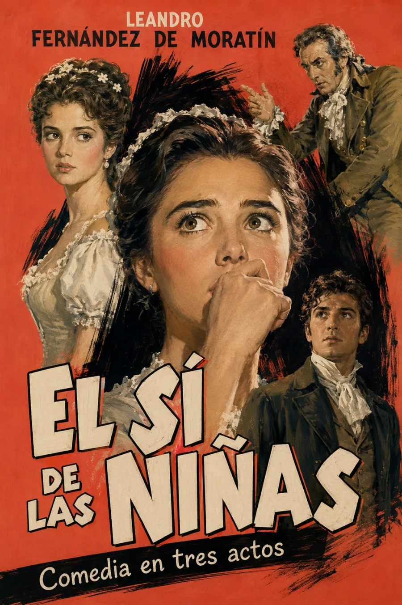

La función comienza
Escucha la obra
Una comedia contra el consentimiento impuesto y a favor de una voz verdaderamente libre.
El sí de las niñas
Acto primero
00:00
Volumen

I
Argumento
El derecho a decir
sí — o no
En una posada de Alcalá de Henares, una muchacha educada para obedecer descubre que callar también puede ser una forma de mentira.
Doña Francisca, de dieciséis años, ha sido prometida por su madre a don Diego, un hombre de cincuenta y nueve. Ella ama en secreto a don Carlos, sin saber que es sobrino de su futuro esposo. Moratín convierte el enredo en una defensa lúcida de la educación, la libertad afectiva y el consentimiento de las mujeres frente a la autoridad familiar.
◆
Actos y escenas
- 01Acto primeroLa obediencia aprendida
- 02Acto segundoEl secreto de Paquita y don Carlos
- 03Acto terceroLa carta y la verdad
- 04DesenlaceEl consentimiento recuperado
◆
Reseña
Una comedia precisa, moderna y radicalmente humana.
4.8/5